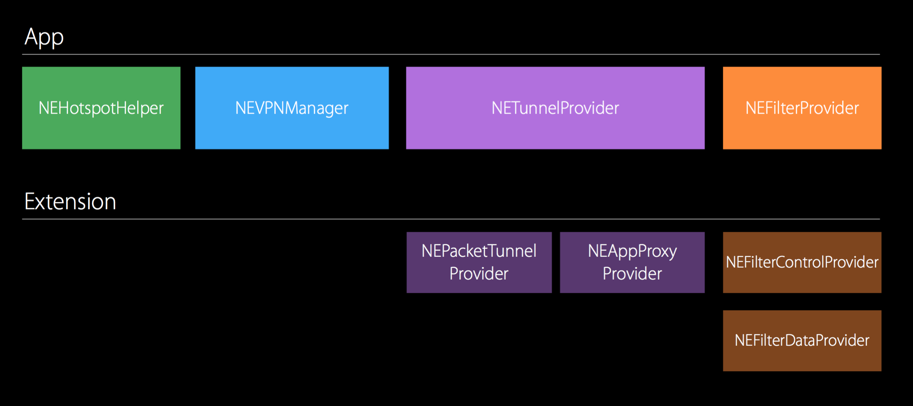
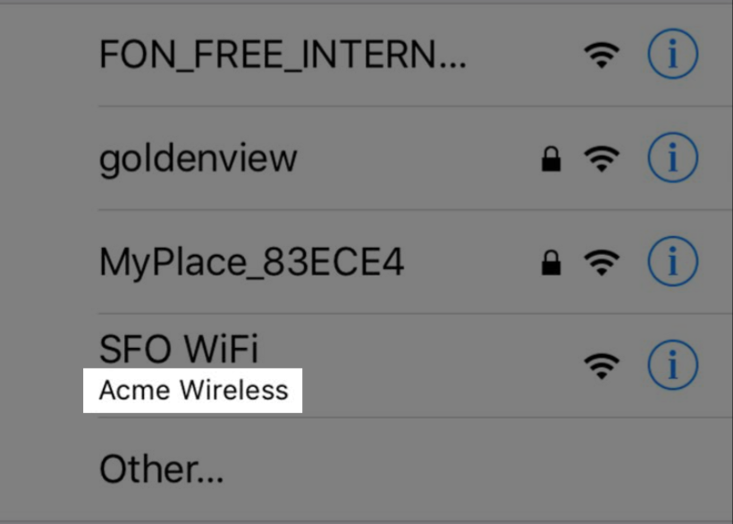

CaptiveNetwork 失效
iOS中关于Wi-Fi相关获取和设置接口比较少，如果不越狱的话，之前常用CaptiveNetwork相关API。
然而iOS9中，这部分API已经失效。如果之前使用它来获取Wi-Fi相关信息如下面代码，则有可能无法成功：
#import <SystemConfiguration/CaptiveNetwork.h>
+(NSString *) getWiFiSSID{
NSArray *ifs = (__bridge_transfer id)CNCopySupportedInterfaces();
id info = nil;
for (NSString *ifnam in ifs) {
info = (__bridge_transfer id)CNCopyCurrentNetworkInfo((__bridge CFStringRef)ifnam);
NSLog(@"%@ => %@", ifnam, info);
if (info && [info count]) { break; }
}
return info ;
}
|
取而代之的则是实用NetworkExtension framework里的NEHotspotHelper class去获取这些信息。
NetworkExtension
NetworkExtension framework 包含如下4个部分：
NEHotspotManager
NEVPNManager
NETunnelProvider
NEFilterProvider

NEHotspotHelper
介绍
NEHotspotHelper class 主要用于Wi-Fi热点的认证，允许APP参与加入到Wi-Fi热点的认证中：
1. 声明可靠热点
2. 执行初始认证
3. 维持认证会话
最简单的例子就是，如同Wi-Fi万能钥匙一样在Wi-Fi扫描列表的SSID下面显示出厂商的相关信息。

申请
如果要使用相关的API，需要发送邮件给networkextension@apple.com，然后会从那里得到回复，再需要回答些问题。（ps：本人也是刚回答完问题）
应用
由于还没有申请下来，所以先贴几段stackoverflow上的代码
#import <NetworkExtension/NetworkExtension.h>
NSArray * networkInterfaces = [NEHotspotHelper supportedNetworkInterfaces];
NSLog(@"Networks %@",networkInterfaces);
for(NEHotspotNetwork *hotspotNetwork in networkInterfaces) {
NSString *ssid = hotspotNetwork.SSID;
NSString *bssid = hotspotNetwork.BSSID;
BOOL secure = hotspotNetwork.secure;
BOOL autoJoined = hotspotNetwork.autoJoined;
double signalStrength = hotspotNetwork.signalStrength;
}
|
NSMutableDictionary* options = [[NSMutableDictionary alloc] init];
[options setObject:@"Try Here" forKey:kNEHotspotHelperOptionDisplayName];
dispatch_queue_t queue = dispatch_queue_create("com.myapp.ex", 0);
BOOL returnType = [NEHotspotHelper registerWithOptions:options queue:queue handler: ^(NEHotspotHelperCommand * cmd) {
if (cmd.commandType == kNEHotspotHelperCommandTypeEvaluate || cmd.commandType == kNEHotspotHelperCommandTypeFilterScanList ) {
for (NEHotspotNetwork* network in cmd.networkList) {
if ([network.SSID isEqualToString:@"Internet"]) {
[network setConfidence:kNEHotspotHelperConfidenceHigh];
NEHotspotHelperResponse *response = [cmd createResponse:kNEHotspotHelperResultSuccess];
[response setNetworkList:@[ network ]];
[response deliver];
NSLog(@"Confidance set to high for ssid:%@",network.SSID);
}
}
}
}];
|